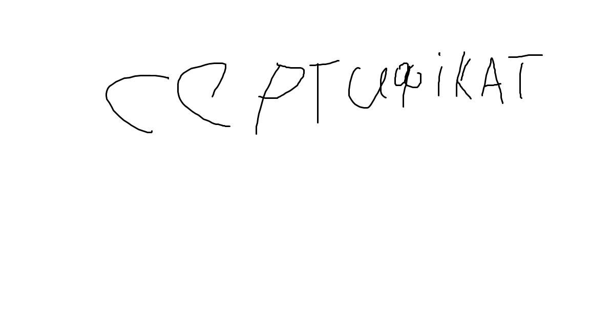

Система контролю версій (VCS) — це спеціальне програмне забезпечення, яке фіксує зміни у файлах проекту з плином часу. Завдяки цьому можна легко повернутися до будь-якого попереднього стану коду, подивитися історію змін або паралельно розробляти нові фічі, не ризикуючи зламати основну версію продукту.
Git — це найпопулярніша сьогодні розподілена система контролю версій. Її створив Лінус Торвальдс (автор операційної системи Linux). Термін "розподілена" означає, що кожен розробник має на своєму комп'ютері повну копію всієї історії проекту, а не просто завантажує окремі файли з центрального сервера.
| Команда | Опис та коментар |
|---|---|
git init |
Створює новий порожній локальний репозиторій у поточній папці комп'ютера. |
git clone <url> |
Копіює існуючий проект з віддаленого сервера (наприклад, з GitHub) на твій ПК. |
git status |
Показує поточний стан робочої директорії: які файли змінено, які додано, а які ще не відстежуються. |
git add <file> |
Додає конкретний файл до індексу для наступного збереження. Команда git add . заіндексує всі файли. |
git commit -m "опис" |
Зберігає всі заіндексовані зміни, створюючи стабільний "знімок" коду з текстовим коментарем. |
git branch <name> |
Створює нову гілку з вказаним ім'ям для розробки окремого функціоналу. |
git checkout <branch> |
Перемикає робоче середовище на іншу гілку (або на конкретний старий комміт). |
git merge <branch> |
Об'єднує зміни з вказаної гілки в ту гілку, в якій ти зараз перебуваєш. |
git push <remote> <branch> |
Відправляє всі твої локальні комміти на віддалений репозиторій (наприклад, на GitHub у гілку main). |
git pull |
Завантажує найсвіжіші зміни з віддаленого сервера та одразу об'єднує їх із твоїм локальним кодом. |
Успішно завершено базовий теоретичний та практичний курс вивчення технології Git.
